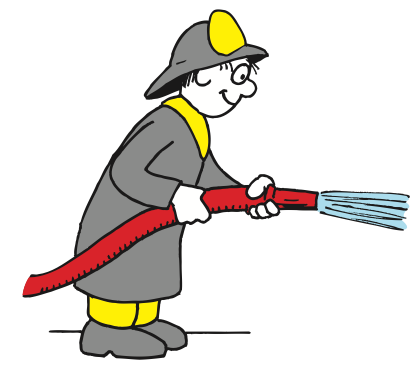
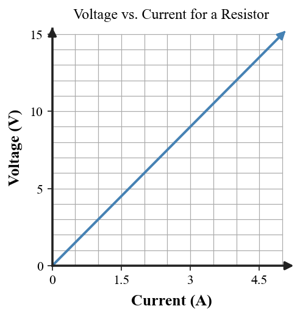
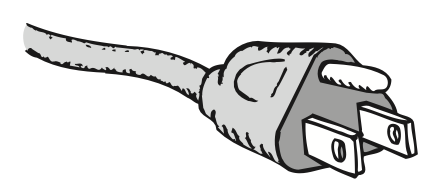

Resistance and Ohm’s Law
Mathematical idea: The relationship $V=IR$ and a voltage–current graph describe the same pattern in symbolic and visual forms.
You will compare wire designs, calculate with Ohm’s Law, interpret a straight-line voltage–current graph, and use the same relationship to explain why electrical safety depends on both voltage and resistance.
Learning Target
Students will use Ohm’s Law to explain how voltage, current, and resistance are related in simple circuits.
I can statements
- I can define electrical resistance as opposition to charge flow.
- I can explain how wire length, thickness, material, and temperature affect resistance.
- I can use Ohm’s Law to calculate voltage, current, or resistance.
- I can predict how changing voltage affects current when resistance is constant.
- I can predict how changing resistance affects current when voltage is constant.
- I can interpret simple voltage-current graphs.
Vocabulary
These are words you will see in this section. Do not define them yet.
- resistance
- ohm
- resistor
- Ohm’s law
- voltage-current graph
- electric shock
- ground wire
Use the preview activity to decide which words you already know, recognize, or do not know yet. Watch for these words in bold when they are first introduced or defined in the reading.
Preview: Skim Before You Read
Directions
Before reading closely, skim the vocabulary list and the section. Look at titles, headings, bold words, pictures, captions, diagrams, tables, and formulas. Do not try to understand everything yet. Your job is to notice what already looks familiar and make predictions about what this section may explain.
Step 1 — Sort the vocabulary. Write each vocabulary word in the column that best matches what you know right now. You may move a word later.
| Know for sure | Recognize | Don’t know yet |
|---|---|---|
Step 2 — Skim the section. Record what catches your attention before you read closely.
| What I noticed | |
|---|---|
| What I predict | |
| What I wonder |
Content: Read, Look, Annotate, Apply
Directions
Read in short chunks. Annotate the prose and the figures together: underline evidence, circle or highlight bold vocabulary, label arrows or measured features, connect a sentence to an image, and write short questions or connections in the margins.
Reading 1: What Resistance Means
A voltage source can establish a push for charge, but the amount of current also depends on resistance, the opposition a conductor or device offers to charge flow. The textbook compares this with water moving through pipes: a narrow or long path restricts flow more than a wide or short path under the same pressure difference.
For wires made of the same material, longer wires have more resistance and thicker wires have less. Material matters because some atomic structures allow conduction electrons to move with fewer interruptions. Copper, for example, has less resistance than an equal-sized steel wire.
Temperature also matters. In most metals, higher temperature means atoms jostle more strongly, increasing collisions that hinder electron motion. This is why resistance is not only a fixed property of “having a wire”; it depends on the wire’s geometry, material, and physical conditions.
Resistance is measured in the ohm, symbol Ω. Devices called resistors are intentionally placed in circuits to control current or establish useful voltage conditions.

Image read: Match each hydraulic feature to its electrical counterpart: pump, flow, and narrow resisting section.

Image read: Compare thick and thin paths under the same push. Write how thickness changes resistance and current.
Stop and Discuss
- Use the hose figure to explain why thicker wire has lower resistance than thinner wire of the same material and length.
- Rank these changes from lower to higher resistance: making a wire longer, making it thicker, heating a typical metal wire. Explain each choice.
Example 1: Design for Lower Resistance
Two copper wires have the same temperature. Wire A is long and thin; Wire B is short and thick.
- Which wire has lower resistance?
- Use both length and thickness as evidence.
You Try It 1: Change One Variable
A metal wire is replaced by a wire of the same material and length but twice as thick.
- Predict how its resistance changes qualitatively.
- At the same voltage, predict what happens to current and explain.
Reading 2: Ohm’s Law and Voltage–Current Patterns
The relationship among voltage, current, and resistance is summarized by Ohm’s law. At constant resistance, increasing voltage increases current. At constant voltage, increasing resistance decreases current. This lets one equation organize several cause-and-effect patterns.
The equation $V=IR$ can be used to solve for any one quantity when the other two are known. More important than algebra is the physical interpretation: voltage provides the electrical push, resistance hampers charge motion, and current is the resulting rate of charge flow.
A voltage-current graph provides another representation. When voltage is on the vertical axis and current on the horizontal axis, a constant-resistance device gives a straight line through the origin. A steeper line corresponds to a larger voltage needed for the same current, which means greater resistance.
Graphs are useful for checking explanations. If voltage doubles while resistance stays constant, the corresponding current should double. If measured points do not follow that proportional pattern, then the device’s resistance may not be constant over the tested conditions.

Image read: Choose two points on the line. Compare how V and I change together, then explain what the straight-line pattern says about resistance.
Stop and Discuss
- In words, what happens to current when voltage doubles but resistance is unchanged?
- How does the straight-line graph support the idea of constant resistance?
- Why does a steeper V-versus-I line represent more resistance?
$V$ = voltage in volts (V)
$I$ = current in amperes (A)
$R$ = resistance in ohms (Ω)
Use the relationship as a model before rearranging it.
Example 2: Voltage Across a Resistor
A 4-Ω resistor has 12 V across it.
- Use Ohm’s law to determine the current.
- Explain why the answer would be smaller if resistance increased while voltage stayed 12 V.
You Try It 2: Another Resistor
A 6-Ω resistor has 18 V across it.
- Determine the current.
- If the voltage were doubled while resistance stayed 6 Ω, predict the new current.
Reading 3: Potential Difference, Current, and Electrical Safety
The source uses electrical safety to reinforce Ohm’s law. An electric shock requires current through the body, and that current depends on both the potential difference across the body and the body’s resistance. A high potential at every part of an object is not enough by itself; there must be a meaningful voltage difference between points.
This explains the bird-on-a-wire example. Both feet are nearly at the same electric potential, so there is little potential difference across the bird. Touching another wire at a different potential would create a very different situation.
Resistance can change dramatically when a path becomes wet or otherwise more conductive. Under the same voltage, a lower-resistance path allows a larger current. The physics lesson is the same one used in ordinary circuit design: voltage, current, and resistance must be considered together.
Modern three-prong plugs add a ground wire connected to the appliance case. If a live conductor accidentally touches the metal case, the ground connection provides a low-resistance path intended to keep the case near ground potential and allow protective devices to interrupt the fault.

Image read: Mark the two foot locations and note that they are on the same wire. Explain why “high potential” is not the same as “large potential difference across the bird.”

Image read: Circle the ground prong and trace its connection to the appliance case. State its safety purpose in terms of potential and current path.
Stop and Discuss
- Why can a bird safely perch on one high-potential wire but be endangered by touching a second wire at a different potential?
- How does lowering resistance affect current when voltage is fixed?
- What job does the ground wire perform in a three-prong appliance?
Example 3: Same Voltage, Different Resistance
Two circuit paths are connected across the same voltage. Path A has much larger resistance than Path B.
- Which path carries less current?
- Use Ohm’s law to justify your answer without calculating.
You Try It 3: Grounding Explanation
A metal appliance case is connected to Earth by a ground wire.
- Explain why the ground connection is designed to be a low-resistance path.
- Connect the explanation to voltage difference and current rather than saying the ground “absorbs electricity.”
Vocabulary: Define the Terms
You have now seen these words in the reading, images, and practice. Use this table to consolidate the physics meaning of each term.
| Vocabulary term | Definition |
|---|---|
| resistance | Opposition a material or device offers to electric current. |
| ohm | The SI unit of electrical resistance, symbol Ω. |
| resistor | A circuit component designed to provide a chosen amount of resistance. |
| Ohm’s law | The relationship among voltage, current, and resistance expressed as V = IR. |
| voltage-current graph | A graph comparing voltage and current; a straight line through the origin can show constant resistance. |
| electric shock | Current passing through the body because a potential difference exists across part of the body. |
| ground wire | A safety conductor connected to Earth that provides a low-resistance path away from an appliance case. |
Summary
- Resistance is opposition to charge flow and depends on length, thickness, material, and temperature.
- Ohm’s law, $V=IR$, relates voltage, current, and resistance.
- At constant resistance, more voltage produces more current; at constant voltage, more resistance produces less current.
- A straight-line voltage–current graph through the origin represents proportional V and I for constant resistance.
- Electrical safety depends on potential difference, available current path, and resistance; grounding provides a protective low-resistance path.
Common Mistakes
| Mistake | Why it is tempting | Check instead |
|---|---|---|
| Thicker wire has more resistance because it contains more material. | More material can sound like “more obstacles.” | A thicker wire provides more available paths for charge, so resistance is lower. |
| Current and voltage can be changed independently with no effect on each other. | They are listed as separate quantities. | At fixed resistance, Ohm’s law requires V and I to change proportionally. |
| A high-voltage object automatically gives a shock. | Warning labels emphasize voltage. | A shock requires a potential difference across the body and a current path; resistance matters too. |
| The ground wire is a place where electricity is stored. | “Ground” sounds like a destination. | The ground wire is a conducting safety path that helps keep the case near Earth potential. |
Name two changes to a metal wire that would increase its resistance.
A 5-Ω resistor has 10 V across it. Calculate the current and state whether a 10-Ω resistor at the same voltage would carry more or less current.
What is one thing you learned in this section? Explain it in at least one complete sentence.
What is one thing from this section you still need to understand or practice more? Be specific.